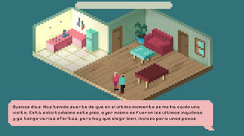
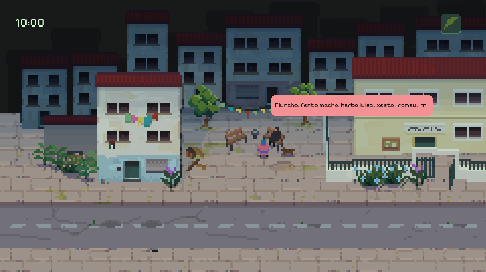
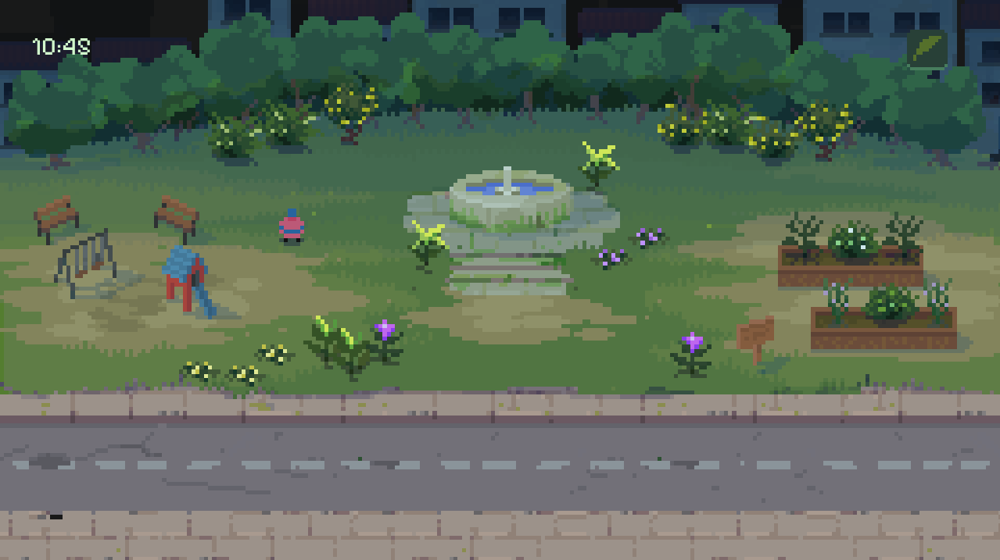
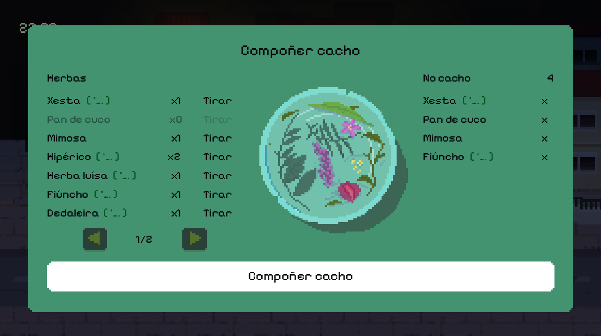
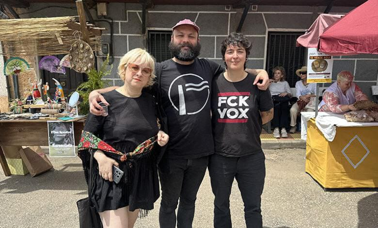
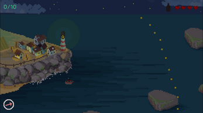

Turistifyer
Ficción interactiva e satírica na que te converterte no turista perfecto para enganar o caseiro e conseguir piso na Cidade Vella da Coruña. Sobrevivir tamén é actuar.
Itch.io — navegador — gratis Xogar en itch.ioBusca as herbas de San Xoán e completa o teu florilexio nesta aventura narrativa onde os saberes e ritos tradicionais do solsticio de verán fían cada etapa do teu percorrido.
Se Dredge navegase polos lagos de Hyrule salvaría o mundo cun feitizo vexetal.


Completa o teu herbario coa sabedoría que se agocha ao teu redor. Aprende a escoitar e os saberes aparecerán onde menos os buscas.
A maxia do San Xoán está no teu camiño. Busca as propiedades das plantas que medran contigo e cataloga os coñecementos adquiridos.

Explora, corta, mezcla… Fai o teu cacho antes de que acabe o día para recibir a protección das herbas e espanta os males do teu camiño.
“Un pequeno florilexio” é a primeira versión que fixemos do xogo, un prototipo creado para a Fuck Capitalism Jam de 2026. Se queres coñecer o universo de Florilexio sen esperas nin listas de desexos, está dispoñible de forma gratuíta en itch.io.


Tortizorza é unha mestura imposible e a mellor tapa posible. Tortizorza Estudo Entertaiment??? somos Roig, que se encarga da programación e do universo estético de todo o que facemos; Poch, compositor, programador e responsable do deseño sonoro, e Bita, que xunta letras que forman historias.
Con esta estrutura en triángulo (unha ración de tortilla) iniciámonos como equipo na Fuck Capitalism 2025 con Turistifyer, un convite a trollear as empresas e caseiros estafadores que fan do dereito á vivenda unha misión imposible. Antes, Roig e Poch xa traballaran en común en Destrucciones Martínez.
Nese equilibrio triangular desenvolvimos tamén Augardentía, o xogo co que gañamos a Game Jam “Dende o Galego, con Humor” da Fundación Carlos Casares en decembro de 2025, e “Un pequeno florilexio”, o prototipo co que nos presentamos á Fuck Capitalismo de 2026 e que é o punto de partida para o desenvolvemento de “Florilexio”.
Florilexio non é o único que facemos. Isto é o demais — por se che gustou o noso rollo.

Ficción interactiva e satírica na que te converterte no turista perfecto para enganar o caseiro e conseguir piso na Cidade Vella da Coruña. Sobrevivir tamén é actuar.
Itch.io — navegador — gratis Xogar en itch.io
O Sentulo sae cada noite pescar polbo, choco e robaliza nas Rías Baixas. Hai noites sen lúa nas que cae outra cousa na rede — e só unha caña de augardente pode axudarlle a plantarlle cara ao monstro que levou o seu pai hai vinte anos.
Itch.io — Windows / Linux — gratis Xogar en itch.ioAquí podes atopar imaxes de “Florilexio” para descarga,
notas de prensa e toda a info actualizada en relación ao xogo.
Escríbenos para máis info, colaboracións ou calquera outra cousa que se che ocorra.
ola@florilexio.gal